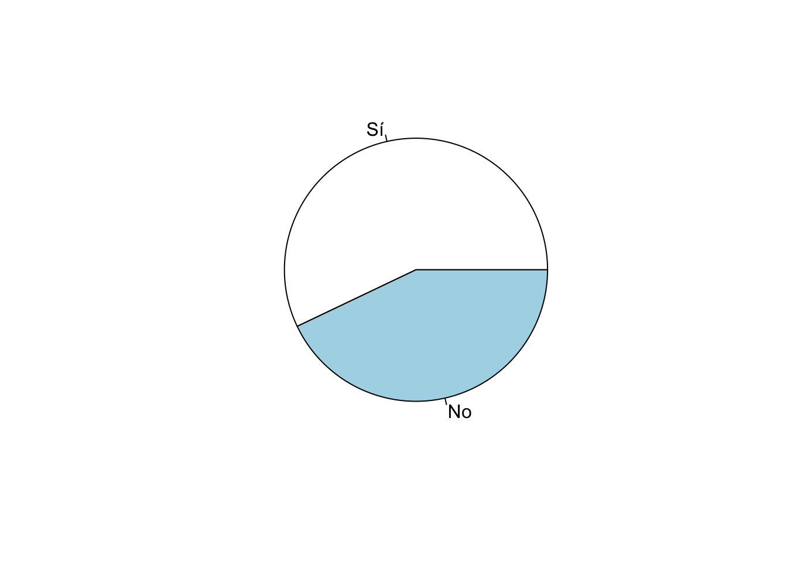
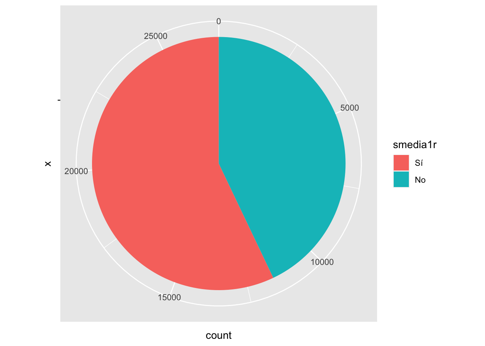
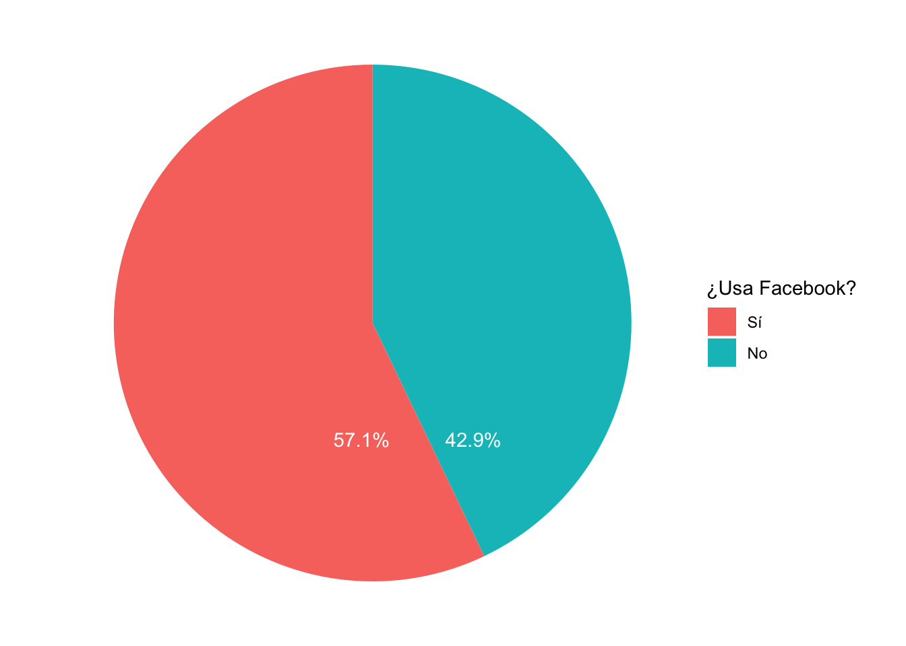
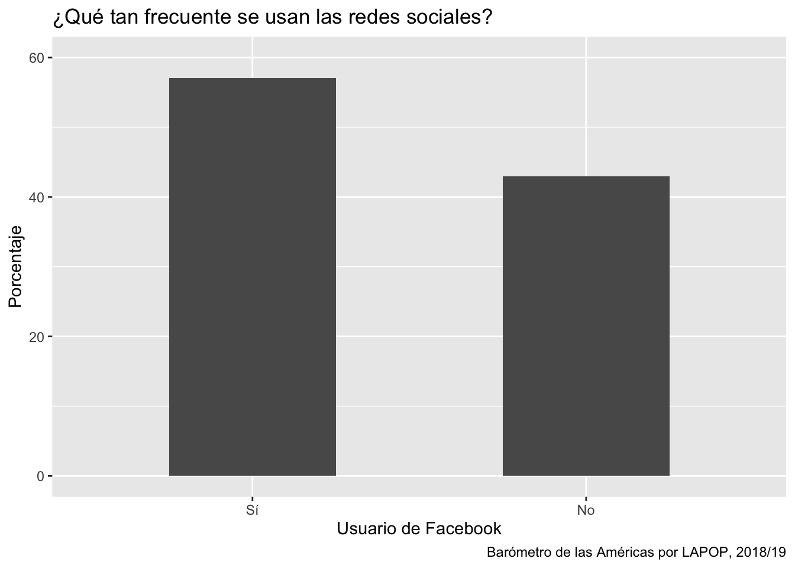

Introducción
En este documento empezaremos con los aspectos básicos de cómo usar la base de datos del Barómetro de las Américas de LAPOP para fines estadísticos. En primer lugar, veremos aspectos básicos de cómo describir una variable mediante una tabla de distribución de frecuencias y cómo graficar esa variable mediante gráficos circulares o de barras. Para eso, vamos a usar el último informe regional “El pulso de la democracia”, disponible aquí, donde se presentan los principales hallazgos de la ronda 2018/19 del Barómetro de las Américas. Una de las secciones de este informe, reporta los datos sobre redes sociales y actitudes políticas. En esta sección, se presentan datos sobre el uso de internet y el uso de redes sociales, en general y por país. Con los datos del Barómetro de las Américas se puede saber el porcentaje de hogares con acceso a celulares, con acceso a internet, así como el porcentaje de personas que usa Whatsapp, Facebook o Twitter. En este documento vamos a reproducir estos resultados.
Sobre la base de datos
Los datos que vamos a usar deben citarse de la siguiente manera: Fuente: Barómetro de las Américas por el Proyecto de Opinión Pública de América Latina (LAPOP), wwww.LapopSurveys.org. Pueden descargar los datos de manera libre aquí En este enlace, se pueden registrar o entrar como “Free User”. En el buscador, se puede ingresar el texto “2018”. Ahí se tendrá acceso a la base de datos completa “2018 LAPOP AmericasBarometer Merge_v1.0_W.dta” en versión para STATA. Se descarga la base de datos en formato zip, la que se descomprime en formato .dta. Una vez descargada y guardada en el directorio de trabajo, se tiene que leer la base de datos como un objeto dataframe en R. En este documento se carga una base de datos recortada. Esta base de datos se encuentra alojada en el repositorio “materials_edu” de la cuenta de LAPOP en GitHub. Mediante la librería rio y el comando import se puede importar esta base de datos desde este repositorio. Además, se seleccionan los datos de países con códigos menores o iguales a 35, es decir, se eliminan las observaciones de Estados Unidos y Canadá.
library(rio)
lapop18 <- import("https://raw.github.com/lapop-central/materials_edu/main/LAPOP_AB_Merge_2018_v1.0.sav")
lapop18 <- subset(lapop18, pais<=35)
Las variables con las que se trabajará son: SMEDIA1. ¿Tiene usted cuenta de Facebook?; SMEDIA4. ¿Tiene usted cuenta de Twitter?; SMEDIA7. ¿Tiene usted cuenta de Whatsapp?. Estas preguntas tienen como opciones:
Sí
No
Al momento de leer la base de datos en R, este programa importa las variables como “num”, que la mayoría de funciones en R trata como numéricas. Estas variables se tienen que convertir a variables de tipo “factor”, pues son variables categóricas, las que guardamos en una nueva variable “smediaxr”. Aquí se ha usado el operador = que es similar al operado <- que asigna un procedimiento a un nuevo objeto de (un dataframe) R
lapop18$smedia1r = as.factor(lapop18$smedia1)
lapop18$smedia4r = as.factor(lapop18$smedia4)
lapop18$smedia7r = as.factor(lapop18$smedia7)
Estas nuevas variables de tipo factor se tienen que etiquetar. En este caso se hace mediante un vector con las etiquetas concatenadas, usando el comando c().
levels(lapop18$smedia1r) <- c("Sí", "No")
levels(lapop18$smedia4r) <- c("Sí", "No")
levels(lapop18$smedia7r) <- c("Sí", "No")
Calcular las variables de usuarios de redes sociales
Como vimos en un documento anterior, se puede calcular nuevas variables con valores condicionales de otras variables usando el comando ifelse. De esta manera, se crea las variables de usuarios de redes sociales.
lapop18$fb_user <- ifelse(lapop18$smedia1==1 & lapop18$smedia2<=4, 1, 0)
lapop18$tw_user <- ifelse(lapop18$smedia4==1 & lapop18$smedia5<=4, 1, 0)
lapop18$wa_user <- ifelse(lapop18$smedia7==1 & lapop18$smedia8<=4, 1, 0)
Describir las variables
Con las variables listas, ahora procedemos a hacer las tablas generales con el comando table. Se puede notar el uso de # como forma de hacer anotaciones, que no son código en R.
table(lapop18$smedia1r) #Facebook
##
## Sí No
## 15389 11573
table(lapop18$smedia4r) #Twitter
##
## Sí No
## 2363 24558
table(lapop18$smedia7r) #Whatsapp
##
## Sí No
## 17446 9569
Este comando table nos brinda las frecuencias absolutas (número de observaciones) por cada categoría de las variables (en este caso Sí y No). Para obtener las frecuencias relativas, usaremos el comando prop.table, donde se anida el comando anterior table.
prop.table(table(lapop18$smedia1r))
##
## Sí No
## 0.5707663 0.4292337
prop.table(table(lapop18$smedia4r))
##
## Sí No
## 0.08777534 0.91222466
prop.table(table(lapop18$smedia7r))
##
## Sí No
## 0.6457894 0.3542106
Sin embargo, el comando prop.table nos devuelve demasiados decimales y las frecuencias relativas en una escala de 0 a 1. Para redondear esta cifra usamos el comando round, que nos permite especificar el número de decimales que se quiere mostrar. Tanto el comando table, como prop.table se anidan dentro de este nuevo comando. En este caso se ha usado 3 decimales, para cuando se multiplique por 100, quede en forma de porcentaje con 1 decimal.
round(prop.table(table(lapop18$smedia1r)), 3)*100
##
## Sí No
## 57.1 42.9
round(prop.table(table(lapop18$smedia4r)), 3)*100
##
## Sí No
## 8.8 91.2
round(prop.table(table(lapop18$smedia7r)), 3)*100
##
## Sí No
## 64.6 35.4
No es práctico presentar 3 tablas cuando las variables tienen las mismas categorías de respuesta. Para fines de presentación podría ser mejor construir una sola tabla. Se puede guardar las tablas parciales en nuevos objetos con el operador <- y luego unirlas como filas con el comando rbind en un nuevo dataframe “tabla”, de tal manera que las respuestas a cada red social aparezcan en filas.
Facebook <- round(prop.table(table(lapop18$smedia1r)), 3)*100
Twitter <- round(prop.table(table(lapop18$smedia4r)), 3)*100
Whatsapp <- round(prop.table(table(lapop18$smedia7r)), 3)*100
tabla <- as.data.frame(rbind(Facebook, Twitter, Whatsapp))
tabla
## Sí No
## Facebook 57.1 42.9
## Twitter 8.8 91.2
## Whatsapp 64.6 35.4
Para tener una mejor presentación de la tabla, se puede usar el comando kable del paquete knitr, usando la tabla construida anteriormente.
library(knitr)
knitr::kable(tabla, format="markdown")
| Facebook |
57.1 |
42.9 |
| Twitter |
8.8 |
91.2 |
| Whatsapp |
64.6 |
35.4 |
Graficar las variables
En la página 54 del reporte se observa que se reportan estos datos en forma gráfica, mediante un gráfico de sectores circulares. Se puede reproducir ese gráfico usando el comando pie que es parte de la sintaxis básica de R. Dentro de este comando se puede anidar el comando table para graficar estos valores.
pie(table(lapop18$smedia1r))

También se podría pensar en un gráfico de barras. Usando los comandos básicos de R, se puede usar el comando barplot.
barplot(prop.table(table(lapop18$smedia1r)))

Estos comandos gráficos tienen opciones para adecuar el gráfico, por ejemplo, para incluir los porcentajes y adecuar las escalas. Pero, para tener más opciones gráficas, podemos usar el paquete ggplot para reproducir el gráfico circular.
En este ejemplo, se ha usado el comando subset nuevamente, pero dentro de ggplot para que el comando (internamente) trabaje con la variable pero sin los valores perdidos. La sintaxis !is.na() hace que el comando no incluya los valores perdidos de una variable en los cálculos. Si se hubiera usado data=lapop el gráfico hubiera incluido un gran sector correspondiente a la proporción de NA. Si se hubiera usado !is.na() fuera de ggplot creando una nueva variable, se hubieran eliminado todas las observaciones con valores perdidos, lo que disminuiría el N, afectando futuros cálculos.
Luego, la especificación aes sirve para definir la “estética” del gráfico. Generalmente se usa para indicar qué variable se va a graficar en qué eje (x o y). También se puede usar la especificación fill= para definir los grupos que se van a generar. El comando ggplot trabaja sumando capas. Luego de especificar los datos y los ejes, se tiene que especificar el tipo de gráfico que se quiere realizar. Esto se hace con las geometrías (“geom”). No existe una geometría directa para hacer un gráfico circular, por lo que se tiene que usar inicialmente un gráfico de barras simple, usando el comando geom_bar(), donde internamente se define el ancho de la barra. Si dejáramos la sintaxis en este punto, se generaría una barra que se dividiría entre los valores de la variable “smedia1r”. Para genera el gráfico circular, se tiene que agregar otro comando coord_polar, que transforma la barra a coordenadas polares, creando un gráfico circular.
library(ggplot2) #librería especializada en gráficos
ggplot(data=subset(lapop18, !is.na(smedia1r)), aes(x="", fill=smedia1r))+
geom_bar(width=1) +
coord_polar("y", start=0)

El gráfico anterior ha partido desde el mismo dataframe “lapop18”, usando los datos de “smedia1r”. Sin embargo, para manipular mejor el gráfico es más fácil crear un nuevo dataframe con los datos agregados (frecuencia y %). Luego se usa ese nuevo dataframe para hacer el pie con ggplot.
Un aspecto a resaltar es que en este caso se está usando el tidyverse, que incluye el comando pipe %>% de la librería dply, que es una forma (un poco) diferente de escribir códigos en R, de manera concatenada, paso a paso. Una explicación simple de cómo se usa el pipe se puede encontrar aquí.
Lo primero que hay que notar es que se va a crear un nuevo objeto llamado “df”. En este objeto se va a guardar información que viene del dataframe “lapop18”. Se usa el comando subset para eliminar los valores perdidos de “smedia1r” del cálculo de los porcentajes. Luego (%>%), estos datos se van a agrupar por categorías de la variable “smedia1r”. A continuación (%>%), en cada grupo se calcula el total de observaciones con el comando summarise(n = n()). Finalmente (último paso con %>%), con este total por grupos se calcula los porcentajes y se guarda estos porcentajes en una nueva columna “per”. La especificación lab.pos no la explicaremos aquí (aunque sirve para luego ubicar la etiqueta en el gráfico).
library(dplyr)
df <- subset(lapop18, !is.na(smedia1r)) %>%
group_by(smedia1r) %>%
summarise(n = n()) %>%
mutate(per=round(n/sum(n), 3)*100)
df
## # A tibble: 2 x 3
## smedia1r n per
## <fct> <int> <dbl>
## 1 Sí 15389 57.1
## 2 No 11573 42.9
Con esta sintaxis se crea una tabla donde se tiene el total de observaciones y el porcentaje por cada categoría de la variable “smedia1r”. Una forma más directa de crear los mismos datos es usando la librería janitor y el comando tabyl. En R existen múltiples maneras de llegar a los mismos resultados.
library(janitor)
subset(lapop18, !is.na(smedia1r)) %>%
tabyl(smedia1r)
## smedia1r n percent
## Sí 15389 0.5707663
## No 11573 0.4292337
Una vez que tenemos la tabla, podemos usarla para trabajar el gráfico circular con ggplot. Nótese que en este caso los datos que se usan vienen del dataframe df (no de lapop18). Este dataframe tiene una columna llamada “per” con los porcentajes respectivos que se grafican en el eje Y. Igual que en el caso anterior, para hacer el gráfico circular, se parte del gráfico de barras (por eso geom_bar), que luego se pasa a coordenadas polares (por eso coord_polar).
Se agrega una capa de texto, con la especificación geom_text. Dentro de esta especificación se determina una “estética” con la etiqueta del dato aes(label=...), donde se junta con el comando paste el dato del porcentaje “per” y el símbolo “%”, con un espacio (sep=...) entre ellos. Se establece el color de la fuente con color="...". Se ajusta a blanco para que contraste con los colores del gráfico circular. Con el comando hjust=... se ajusta la posición horizontal de este texto. El comando ggplot puede incluir varios “temas” para el gráfico. En este caso se ha usado theme_void() que indica un fondo vacío. Finalmente, con la especificación scale_fill_discrete(name=...) se puede cambiar el título de la leyenda para que no aparezca el nombre de la variable, sino una etiqueta más adecuada.
ggplot(data=df, aes(x="", y=per, fill=smedia1r))+
geom_bar(width=1, stat="identity")+
geom_text(aes(label=paste(per, "%", sep="")), color="white", hjust=-0.3)+
coord_polar("y", start=0)+
theme_void()+
scale_fill_discrete(name="¿Usa Facebook?")

Si en lugar de un gráfico circular se quiere presentar un gráfico de barras, con los datos del dataframe “lapop18” se puede utilizar el siguiente código. A diferencia del primer gráfico circular, ahora la especificación aes(..) incluye la variable “smedia1r” como variable a graficar en el eje X. Dentro del objeto geométrico geom_bar() se indica que la barra debe representar las proporciones en porcentajes aes(y=..prop..*100, group=1). En este ejemplo, se ha incluido un etiqueta general para el gráfico y para los ejes con el comando labs(...). En este comando también se puede agregar un “caption” para indicar la fuente de los datos. Finalmente, con la especificación coord_cartesian(ylim=c(0,60)) se limita el eje Y a valores entre 0 y 60.
ggplot(data=subset(lapop18, !is.na(smedia1r)), aes(x=smedia1r))+
geom_bar(aes(y=..prop..*100, group=1), width=0.5)+
labs(title="¿Qué tan frecuente se usan las redes sociales?", x="Usuario de Facebook", y="Porcentaje", caption="Barómetro de las Américas por LAPOP, 2018/19")+
coord_cartesian(ylim=c(0, 60))

En este caso también se puede usar los datos agrupados del dataframe “df”. A diferencia de la opción anterior, en “df” se cuenta con el dato del porcentaje, por lo que no se debe calcular en el código, por lo que en la especificación de la estética indica que en el eje X se debe mostrar las alternativas de la variable “smedia1r” y en el eje Y el porcentaje, de esta manera aes(x=media1r, y=per). Por este motivo también en la especificación geom_bar, ahora en lugar de requerir el cálculo del porcentaje, solo se indica que replique los datos (con stat="identity") de aes. Finalmente, en este caso le agregamos la capa de texto para incluir los porcentajes en cada columna, con la especificación geom_text.
ggplot(df, aes(x=smedia1r, y=per))+
geom_bar(stat="identity", width=0.5)+
geom_text(aes(label=paste(per, "%", sep="")), color="black", vjust=-0.5)+
labs(title="¿Qué tan frecuente se usan las redes sociales", x="Usuario de Facebook", y="Porcentaje", caption="Barómetro de las Américas por LAPOP, 2018/19")+
coord_cartesian(ylim=c(0, 60))

Resumen
En este documento se ha trabajado con variables categóricas nominales, como si usa o no usa redes sociales. Se ha presentando las formas de cómo describir en tablas de frecuencia y cómo graficar estas variables, mediante gráficos circulares o de barras.
Nota final
Los resultados presentados no son exactamente iguales a los del reporte pues LAPOP incluye el efecto del diseño muestral en sus cálculos. Según esta sintaxis, se encuentra que el 57.1% de entrevistados reporta ser usuario de Facebook, cuando en el reporte aparece 56.2%. Lo mismo con Twitter, que aquí se calcula en 8.8% y en el reporte 7.9%; y con Whatsapp que aquí aparece con 64.6% y en el reporte con 64.4%. Como se indicó en el documento sobre el uso de los factores de expansión usando los datos del Barómetro de las Américas (disponible aquí), hay varias maneras de reproducir los resultados incorporando el efecto de diseño. Para reproducir los datos del reporte exactamente se tiene que incluir este efecto de diseño en R mediante el paquete survey. Como esta es una introducción a la estadística descriptiva, no se ha hecho, pero más adelante se incluirá en los cálculos el efecto de diseño. En este documento se puede usar el comando freq que permite la inclusión de una variable de factor de expansión, como “weight1500”. Se incluye la especificación plot=F para no producir los gráficos de barras.
library(descr)
descr::freq(lapop18$fb_user, lapop18$weight1500, plot = F)
## lapop18$fb_user
## Frequency Percent Valid Percent
## 0 11337 41.988 43.77
## 1 14564 53.939 56.23
## NA's 1100 4.073
## Total 27000 100.000 100.00
descr::freq(lapop18$tw_user, lapop18$weight1500, plot = F)
## lapop18$tw_user
## Frequency Percent Valid Percent
## 0 23819 88.220 92.023
## 1 2065 7.647 7.977
## NA's 1116 4.133
## Total 27000 100.000 100.000
descr::freq(lapop18$wa_user, lapop18$weight1500, plot = F)
## lapop18$wa_user
## Frequency Percent Valid Percent
## 0 9252 34.266 35.63
## 1 16714 61.903 64.37
## NA's 1035 3.832
## Total 27000 100.000 100.00
Sin considerar el efecto de diseño, se tiene que 57.1% de entrevistados cuenta con una cuenta de Facebook. Este porcentaje varía a 55.2% si se incluye la variable de expansión, que es el valor que se muestra en el reporte. Estos resultados ponderados también se pueden guardar en objetos y luego graficar de la misma manera que se ha hecho con los resultados sin ponderar.
